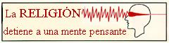

Enero 22 2005
Yo no quiero dejarte prisionero de una organización que primero te inyecta el veneno del complejo de culpa, para decirte después que el único antitodo lo tienen ellos. No quiero que te inculquen una moral tan artera que considera más peligrosos una teta, que una pistola o un artilugio capaz de arrasar una ciudad entera.
Yo no quiero que te enseñen a dividir la humanidad en buenos y malos, en fieles e infieles, en los “nuestros” y el resto. No quiero que tiñan de pecado original tu inmaculada alma, ni que vendan tu niñez a algún desaprensivo de su organización, oculto y a salvo por su jerarquía.
Yo no quiero que maten tu rebeldía con un puñal de resignación, ni que amenacen tu bendita osadía con un infierno a su medida. No quiero que te cambien por tristeza tus toneladas de alegría, que distraigan tu mirada con el más allá del más aquí, que las promesas de vida eterna te hagan olvidar el compromiso frente a la eterna mala vida de los de siempre, que injusto sea normal y hermanos no sean todos, que de tanto mirar al cielo se te olvide el suelo.
Yo no quiero que nadie dirija tu cama, que unos hombres que viven solos te digan lo que es familia, que la justicia social es envidia, el impulso natural lascivia y la libertad pecado. No quiero verte expiar sus culpas, perdido en sus turbas, sin razón ni corazón, tan pendiente de los santos que no veas que todos los demás somos tantos, no quiero que te cambien un beso por un paraíso, ni un abrazo por un latigazo, que te sustituyan la solidaridad por la caridad.
Yo no quiero para ti ni su cielo, ni su infierno eternos, no quiero su bálsamo del no pensar, el bálsamo del perdón por nada, la cadena del complejo de culpa o el látigo del castigo divino, no quiero que compres almas por un plato de lentejas, ni que vistas a los desnudos a cambio de reemplazar al Dios que reza, para ti hijo mío, quiero paz de verdad, paz de humano, paz de hermano, amor de verdad, amor de humano, amor de hermano, esperanza de verdad, esperanza de humano, esperanza de hermano, para ti quiero todas las manos, toda la paz, todas las esperanzas y todo el amor, porque para ti deseo que todos los seres humanos sean tus hermanos, sin distinción de raza, sexo o credo, para ti quiero la plenitud de ser humano, hermano, entero y sin miedo.

Volver a la sección Sociedad y religión
Comentarios
Comments powered by Disqus